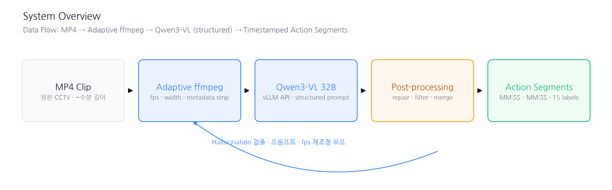
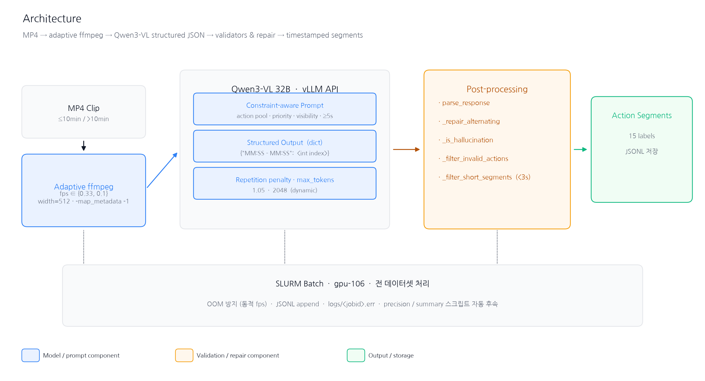
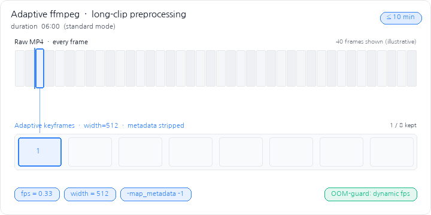
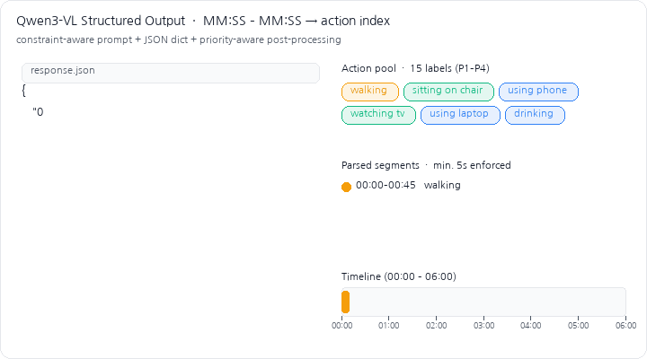
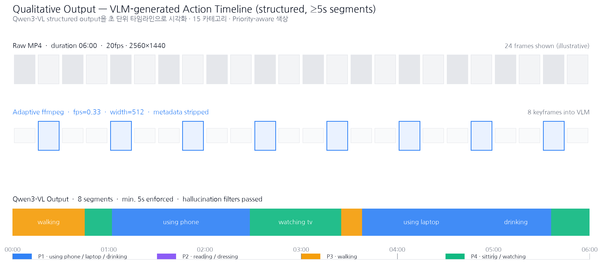
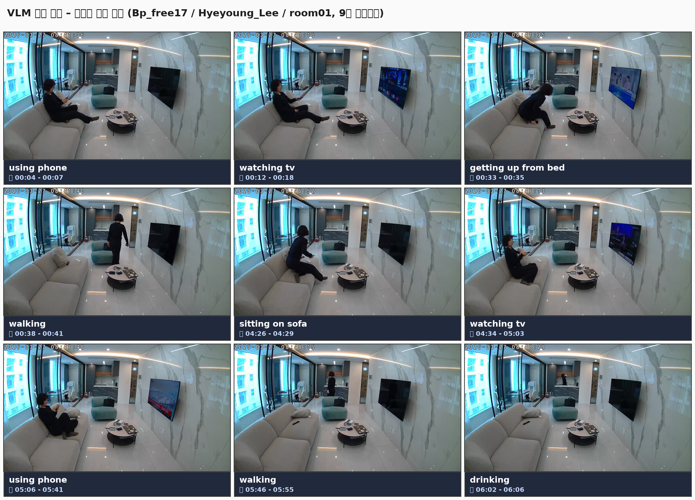

15개 카테고리에 대한 초 단위 정밀 타임스탬프 액션 세그먼트가 필요했지만, 전용 action recognizer를 새로 학습할 자원과 시간이 없었다.
또한 원본 클립이 길어 그대로 VLM에 넣으면 OOM이 자주 발생, 전체 데이터셋 배치가 불가능했다.



전용 액션 인식기를 학습하지 않고도, Qwen3-VL + constraint-aware structured output + adaptive ffmpeg의 조합만으로 원본 MP4를 초 단위 타임스탬프 액션 세그먼트로 변환하는 파이프라인을 확보하였고, SLURM 위에서 전 데이터셋 배치 처리가 가능한 상태로 안착시켰다.


* 9개 샘플 프레임에 Qwen3-VL이 출력한 MM:SS 타임스탬프 · 액션 라벨을 오버레이. Bp_free17 / Hyeyoung_Lee / room01 세션.